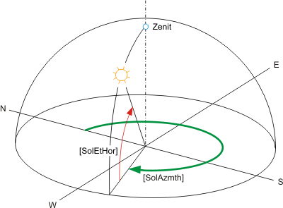

SOL_POS：太阳位置的计算
块 SOL_POS (FB443) 计算当前太阳位置（太阳高度角和太阳方位角）。此外，还计算相对于给定表面的当前太阳高度角和直接太阳辐射的相对强度。可以预先设置预设日期/time和时间系数，以便调试以简短的方式测试某些功能。
Application
- Position and angle for blinds are controlled in relation of the solar position (anti-glare). This helps prevent direct solar radiation into a building while admitting as much light as possible into the building.
- Day/night switching in dependence of sunrise/sunset (protection against intrusion blinds, lighting control).
功能性
Calculate solar position
该块根据 DIN 5034-2 从以下值计算太阳位置：
- Local time and date as per system time and current settings for time zone (UTC Offset) and daylight saving time.
- Geographical longitude (Eastern longitude) [Lngit] and latitude (Northern latitude) [Latit].

计算出的太阳位置由以下角度表示：
- [SolAzmth] = Solar azimuth angle (angle of sun to North).
- [SolEtHor] = Solar elevation angle (angle of sun to horizontal horizon).
Calculate solar elevation angle (relative to given surface).
这些块计算相对于给定表面的太阳高度角。
- Given surface: Orientation [AspSrf], tilt [TltSrf].

发出计算出的太阳高度角 [SolEtSrf]（太阳与给定表面的角度）。
Calculate solar radiation (relative to given surface).
该模块计算给定表面上垂直于太阳的表面的太阳辐射（=最大太阳辐射）。不考虑模糊或扩散等影响。
给定表面：方向 [AspSrf]，倾斜 [TltSrf]。
给定表面上计算的太阳辐射 [SolRdSrf] 在 % 中发出到最大太阳辐射 (100%)。
Sunrise, sunset, day/night
发出计算出的日出时间[Sunrise]和日落时间[Sunset]。
白天是指太阳高度角 [SolEtHor] > 0°。
发出白天（日出到日落）或夜晚。
输入
Pin | E | Description | |||||
没有别针。 |
| 系统时间根据日期和时间进行评估。 | |||||
没有别针。 |
| UTC 偏移量和夏令时 /standard 时间按时区计算。 UTC 偏移量在 BACnet 设备对象中定义。 UTC 偏移量对于 SOL_POS 的正常运行非常重要！ | |||||
Local Time Zone | UTC offset (UTC – Local Time) | Time at 12:00 UTC | |||||
AST - 大西洋标准 EDT - 东部夏令时 | +240 分钟 | 8 am | |||||
EST - 东方标准 | +300 分钟 | 7 am | |||||
CST - 中央标准 | +360 分钟 | 6 am | |||||
MST - 山地标准 | +420 分钟 | 5 am | |||||
PST - 太平洋标准 | +480 分钟 | 4 am | |||||
ALA - 阿拉斯加标准 | +540 分钟 | 3 am | |||||
CET - 中欧 MET - 中欧 MEWT - 中欧冬季 | -60分钟 | 1 pm | |||||
EET - 东欧 | -120分钟 | 2 pm | |||||
WAST - 西澳大利亚标准 | -420分钟 | 7 pm | |||||
CCT - China Coast, USSR Zone 7 | -480分钟 | 8 pm | |||||
JST - Japan Standard, USSR Zone 8 | -540分钟 | 9 pm | |||||
EAST - 东澳大利亚标准 GST | -600分钟 | 10 pm | |||||
NZST - 新西兰标准 NZT - 新西兰 | -720分钟 | 午夜 | |||||
Latit | pa | 北纬。 | |||||
47.17 | 楚格的默认值。 | ||||||
... | 本地价值。 | ||||||
Lngit | pa | 东经。 | |||||
8.52 | 楚格的默认值。 | ||||||
... | 本地价值。 | ||||||
AspSrf | pa | 纵横角倾斜冲浪。 倾斜表面相对于北的角度。 | |||||
0° | 北。 | 例如。 [AspSrf] = 0° 且 [TltSrf] = 90°：指定面向北的垂直表面。 | |||||
90° | 东方。 |
| |||||
180° | 南。 | 例如。 [AspSrf] = 180° 且 [TltSrf] = 90°：这指定了面向南的垂直表面。 | |||||
270° | 西方。 |
| |||||
... | ... | 例如。 [AspSrf] = 180° 且 [TltSrf] = 0°：指定水平面朝北。顶部/zenith--- | |||||
TltSrf | pa | 倾斜角度倾斜冲浪。 倾斜表面相对于地平线的倾斜度。 | |||||
0.0 | 水平面。 | ||||||
90.0 | 垂直表面。 | ||||||
-90.0 至 90.0。 | 表面朝上。 | ||||||
EnSim | pa | 发布模拟 通过 [EnSim] 启用模拟。 可以通过[SimDaTi]预设日期和时间，以使用时间因子[TiFacSim]加速曲线。
对于 [TiFacSim] = 0 表示时间静止，即使用 [SimDaTi] 中的预设。 [TiFacSim] = 1 表示实时，因为 [TiFacSim] > 1 倍比实时快。设置 [TiFacSim] = 1440 以一分钟模拟一天。 | 调试注意事项：
| ||||
SimDaTi | pa | 模拟日期和时间。 | |||||
TiFacSim | pa | 模拟的时间转换因子。 | |||||
UtcOfs | pa | UTC offset | |||||
输出
Pin | E | Description | |
SolAzmth | a | 太阳方位角。 太阳相对于北方的角度。 | |
SolEtHor | a | 太阳高度角。地平线角。 太阳与水平地平线的角度。 | |
SolEtSrf | a | Sol.elev.angle 倾斜冲浪。 太阳相对于倾斜表面的角度 [AspSrf]、[TltSrf]。 | |
SolRdSrf | a | Sol.rad.on 倾斜冲浪。 倾斜表面 [AspSrf]、[TltSrf] 上 % 中的太阳辐射。 | |
100 | 100% 直接太阳辐射。 | ||
0 | 无太阳直接辐射。 | ||
NdaySta | a | 夜昼状态。 |
|
0（夜间） | 夜晚。 | ||
1（日） 默认 | 日出 [Sunrise] 和日落 [Sunset] 之间的一天。 | ||
Sunrise | a | 日出。 当地时间日出。 | |
Sunset | a | 日落。 当地时间日落时分。 | |
DsavSta | a | DST status 夏令时状态。 显示夏令时和标准时间之间的转换状态。 | |
0（否） 默认 | 标准时间（默认值）。 | ||
1（是） | 夏令时。 | ||
ErrCode | a | 错误代码 整数（默认值：20） | |
输入值
Pin | Description | Data type. | Default value | E.g. Engineering unit or Text group | Min. | Max. |
Latit | 北纬。 | 真实的 | 47.17 | 角度 | -90.0 | 90.0 |
Lngit | 东经。 | 真实的 | 8.52 | 角度 | -180.0 | 180.0 |
AspSrf | 纵横角倾斜冲浪。 | 真实的 | 180.0 | 角度 | -360.0 | 360.0 |
TltSrf | 倾斜角度倾斜冲浪。 | 真实的 | 90.0 | 角度 | -180.0 | 180.0 |
EnSim | 发布模拟 | 布尔值 | 0（否） | 不，是 |
|
|
SimDaTi | 模拟日期和时间。 | DateTime |
|
|
|
|
TiFacSim | 时间转换因子模拟。 | 真实的 | 0 |
| 0 | 10000 |
UtcOfs | UTC offset | 整数 | -60 | 分钟 | -720 | 720 |
输出值
Pin | Description | Data type. | Default value | E.g. Engineering unit or Text group | Min. | Max. |
SolAzmth | 太阳方位角。 | 真实的 | 0.0 | 角度 | 0.0 | 360.0 |
SolEtHor | 太阳高度角。地平线角。 | 真实的 | 0.0 | 角度 | -90.0 | 90.0 |
SolEtSrf | Sol.elev.angle 倾斜冲浪。 | 真实的 | 0.0 | 角度 | -90.0 | 90.0 |
SolRdSrf | Sol.rad.on 倾斜冲浪。 | 真实的 | 0.0 | % | 0.0 | 100.0 |
NdaySta | 夜昼状态。 | 布尔值 | 1（日） | 夜晚，白天 |
|
|
Sunrise | 日出 | 时间 | T#0D_0H_0M_0S_0MSS |
|
|
|
Sunset | 日落 | 时间 | T#0D_0H_0M_0S_0MS |
|
|
|
DsavSta | DST status | 布尔值 | 0（否） | 不，是 |
|
|
ErrCode | 错误代码 | 整数 | 20 |
| 0 | 33 |
例子
Example:
楚格：经度 = 8.52°，纬度 = 47.17°。
日期：2005年1月1日
时区：TimeZone = +1 ； UTC 偏移：-60 分钟。
相对于南的倾斜表面的方向：[AspSrf] = 180°。
倾斜表面角度：[TltSrf] = 90°（垂直）。
Diagrams:
[SolEtHor] = 地平线的太阳高度角。
[SolAzmth] = 太阳方位角。
[NdaySta] = 昼夜状态。
[SolElSrf] = 太阳与倾斜表面的高度角。
[SolElSrf] = 倾斜表面上 % 中的太阳辐射。

计算日出时间：上午 8 点 18 分。
计算日落时间：16:41
过程响应
标准（参见General rules and information).
故障排除
标准（参见General rules and information).